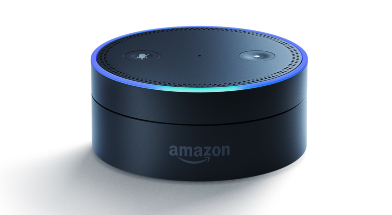
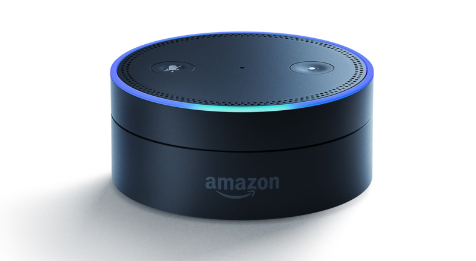
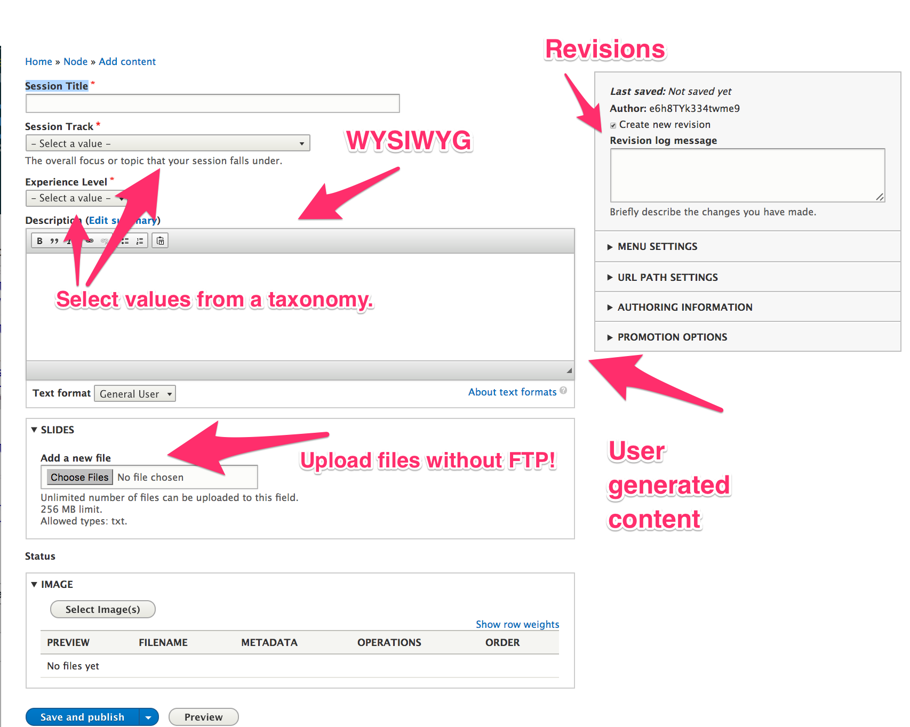
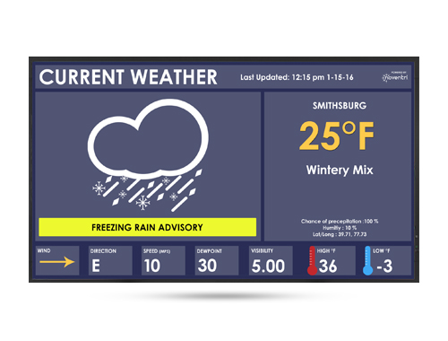
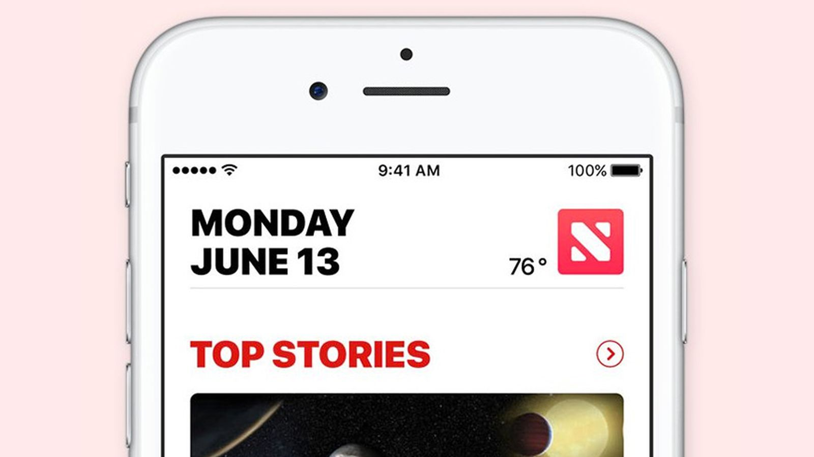
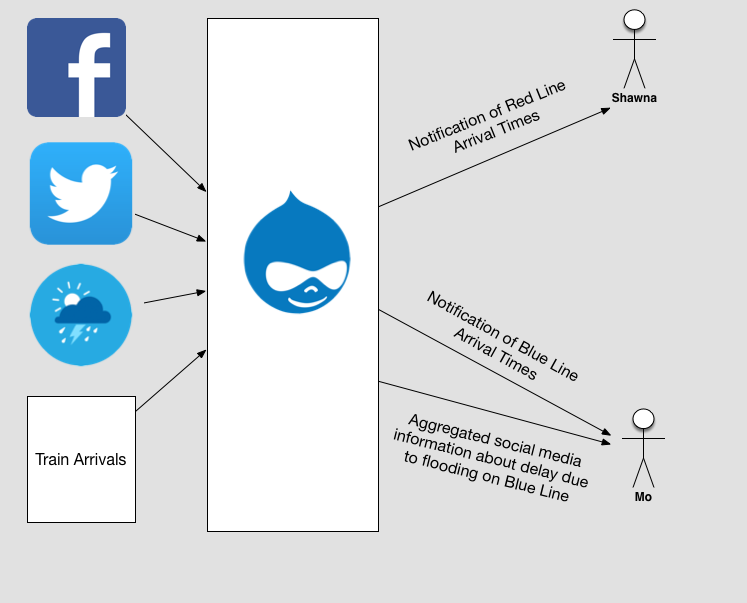
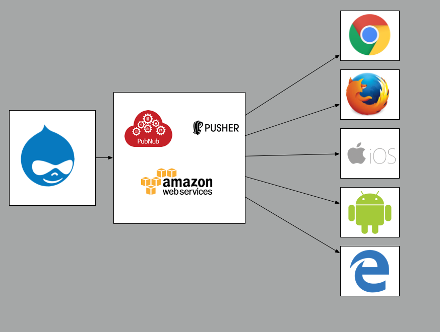
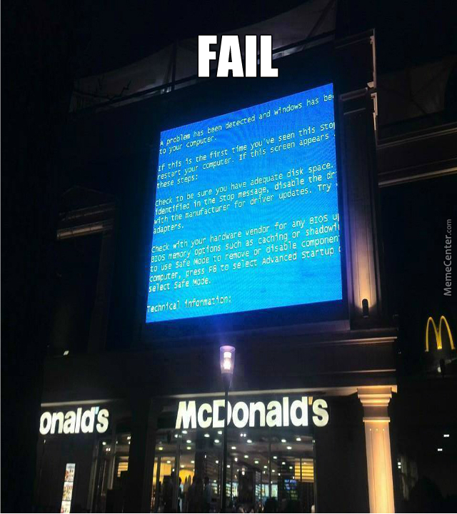
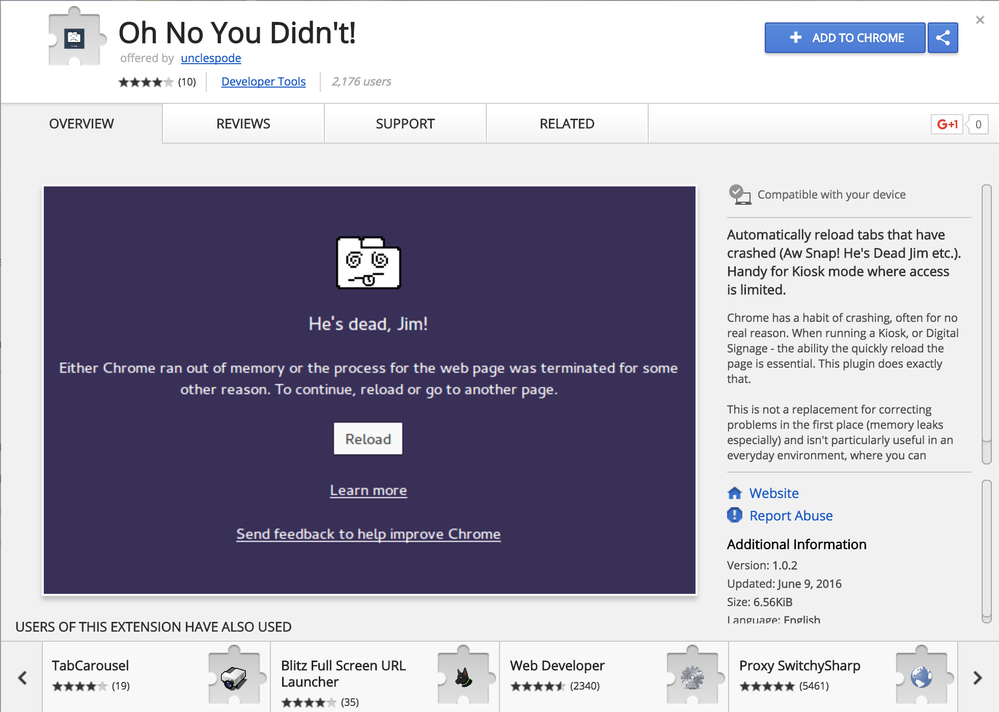
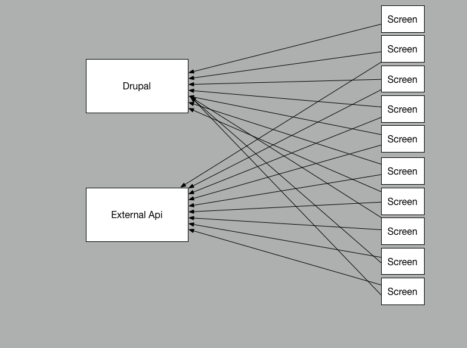

Beyond Websites: Using Drupal For Digital Signs


Technical Architect, Acquia
D.O: adam.weingarten
github: aweingarten
linkedin: adam.weingarten
Technical Architect, Acquia
D.O: mikemadison
github: mikemadison13
linkedin: mikemadison
Why are we here?
Next-generation digital experiences
Beyond conventional browser
What could those look like?
 


Touch Screen on a Car/Plane
Mall Kiosk
Why are we really here? Signs!
What are you going to hear about?
Content Management
Working with external data
Data Transmission
Device Management
Security
Support
Case Studies
Why even use Drupal to power a sign?
Skeptics say: There are better options!
Caution: Gratuitous opportunity to cram in buzzwords and technologies!
Great DX. Horrible UX.
Drupal provides UX for managing content!
Even in a headless world Drupal has a place
Makes it easy to author and edit
Has views to find the right content
Services to spit it out
Why do we use Drupal to manage content again?
Content Modeling
Access Controls & Permissions
Revisioning
Translations
Reproducing this elsewhere is expensive
Drupal lets non dev mortals edit the web

Content Model Example: DC Metro!

Lines: Red, Blue, Yellow, Green
Line Direction: Shady Grove or Glenmont
Stations: Metro Center, Smithsonian, Farragut North
Platforms: Single platform can service Multiple lines.
D8 Makes it easy to syndicate this data using webservices
Build your own API
Working with External Data and Feeds
Drupal isn't the source of all things.
It can still help process outside data.
What kind of "external data" from outside APIs:
Pinterest, Facebook, Twitter


Train Arrivals
Weather
Stock Quotes
Top News
Just do it on the client side? Nope.
API Rate Limiting
Security/Credentials
Client processing introduces inconsistencies.
Why not just write a Symfony app??

Context is everything
Remember that Drupal content model?
We can use it to to process that data!
Back to our train example...
Say we have an arrival feed.
Can process updates for specific signs
Let the signs know that something has changed
Can't do that with a Symfony app!
Need to reinvent the wheel!
How does this actually work?
Start with a Drush command
Store the credentials in Drupal
Sprinkle in some caching to enforce rate limits
Parse and normalize data
How to loop your Drush command when all you have is cron?
Use cron to start the script on a regular interval (e.g. 1 minute)
Pass iterations as a Drush parameter into your command
Write a loop within the script
Repeat
DANGER!
This assumes that your script can run very fast
Optimize and cache accordingly
Data Transmission
Getting information from Drupal to your device
Approaches
Pull suks
High Traffic
Load on devices
Load on servers
Can mimic DDOS
The dream
Send data to devices from multiple APIs in "real" time

Problem: Data in real time
!@$!%@# Caching
Can't constantly reload
Must stay "current" over time
Limited or no user interactivity
Our Solution?
Use a websocket!
Long connection time
Nearly instantaneous communication
Can be shared between devices
Bi-directional
...and most importantly
HIGHLY Scalable
(pretty critical for a lot of devices getting a lot of data)
Case Study: AWS IOT Service
N number of Devices each subscribe to 1 or more "topics"
Drupal subscribes to one or more data sources
Drupal pushes appropriate data to appropriate topic(s)
IOT pushes data to connected device(s)


Pretty cool but...
...now we have a new problem
Device Management
So Far, Drupal Knows About:
Data
Content
But!
That case study only works if Drupal knows about the Devices too
?
Which device cares about what data?
What format should the data be provided in?
How do you make sure that only your devices are accessing the data?
Which device cares about what data?
Device Location: DC Metro
What direction do trains travel?
What tracks does this screen cover?
What platform is the device on?
What station is the platform in?
What routes run through that platform and station?

Create "Content" Types
Entity references provide context
Metadata can be used in reports
UX bonus: re-use this structure for message / data placement
Caution:
Fully boostrapping Drupal during parsing == slow
Cache!
What format should the data be provided in?
What size screen?
What IP address?
What direction is the screen facing?
What language should the device display?
How do you make sure that only your devices are accessing the data
Whitelist your system
Make sure your service requires authentication from devices
Require TFA for user access
(let's talk more about this)
Security
You just created a real device in the real world!
And everyone wants to hack it

Hacking the Usual Suspects
Webserver
Drupal
Websocket
Physical Devices
...and most terrifying: Source Data
Webserver and Drupal
LOTS of best practices here
Read the interwebs
Watch Drupalcon sessions
Websocket
Be smart about what you use
Services like Amazon IOT have authentication built in
Give your hardware some love
Embedded devices have poor security track-records
Often ship with default passwords.
Restrict physical access
You hardware isn't just hardware.
It's also running software.
Make sure that the vendor releases patches in a timely manner
Stay on top of firmware updates
Plan for upgrades when any installed software has a published vulnerability
If it can connect to the interwebs you can hack it
Even a TV can be hacked
Source Data
Guard the back door!!!!
MUST be as secure (or more so) than the rest of the stack
Validate your data
Audit your data
It's 2017 use SSL everywhere
No one wants a man in the middle attack
Great way to vandalize your sign
It's a go live blocker

General Best Practices
Prevent public IPs from logging in
TFA
Saml/SSO
Lock down user accounts
It's not paranoia if they are really out to get you
In case you were wondering: they are.
Lastly...
You can take all these precautions and still have issues
Be prepared for DOS and other attacks
Hacking isn't just taking over a device
(sometimes bringing down a web server is just as effective as controlling it)
Fault Tolerance
Something goes wrong on a webpage you reload
Don't give it a second thought
When a sign shows a blue screen of death people notice
What does failure look like?

Exception Handling
Graceful Degradation
At some point you will have a problem that you can't handle

Custom extensions to auto reload failed tabs
Good starting point for a custom extension
Support
Troubleshooting a complex stack with API integrations is hard

Let's pretend you didn't see this presentation
Devices use Angular to poll various APIs in real time (directly)
You didn't load test any of your web servers before launch
You add 20 more screens in production

All of your screens lose data simultaneously
How do you troubleshoot?
Did a server powering one of the APIs crash?
Did the web server crash?
Understanding the Architecture
Make sure support knows what those APIs are.
Make sure support knows the warnings signs and symptoms of problems.
Need escalation plans for outages
Who owns which API
Who you gonna call
Know what you can and can't fix
Figure this out before something bad happens
(that includes testing before hand)
Load test before scaling up
Mirror the production hardware
Including any dependent APIs
And remember!
Your source APIs may not have as robust of a workflow as your main site
Make sure the owners of those systems know not to make changes without notifying your dev team

Case Studies
1: 10k+ devices, mostly static data
2: < 5k devices, real-time data
Case Study 1: Retail Store Displays
Devices: Video Walls, TVs, Tablets, Phones
Content: Media for Promotion & Marketing
Challenges
Store locations are distributed geographically
Tens of thousands of devices
Significant variance in display sizes
Approach
Drupal manages all content
Drupal manages all devices
Google GCM Push Model
Offline content playback
Advantages
Central place to create content and manage devices
Reuse content and/or custom content per device
Internet connectivity isn't constantly required
System is massively scalable
UX for content managers
Case Study 2: Mass Transit Displays
Devices: Digital Screens
Content: Arrival data, messaging / emergency communication
Challenges
Real-time data across thousands of devices
Internet & websocket connectivity
Error handling & recovery
On-demand messaging
Performance
Approach
Arrivals (and other) data parsed by Drupal
Drupal content for messaging
Amazon IOT Websocket Push Model
React front end
Inventory of Drupal assets to speed parsing
Advantages
Right sized targeted messaging
Arrival data changes on screen within 5-8 seconds
System is massively scalable
UX for content managers
Wrap Up
Why Drupal is a good idea for signs!
A few techniques to use
A couple of case studies on how we used them
Questions?
Friday sprint reminder slide
DA asked us to include this.
Resources